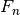
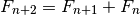
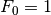
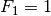
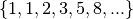
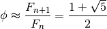
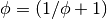

math – Math, Physics, Units Conversion¶
Math, Physics, Units Conversion.
accelr¶
Acceleration Calculator
Sample Output
ENTER: Mass of moving object in kg? 12000
ENTER: Displacement in metres ? 50
ENTER: Duration of notion in seconds ? 6
ENTER: Velocity at START of acceleration (metres/second)? 2
ENTER: Velocity at END of acceleration (metres/second)? .5
ACCELERATION CALCULATION
Mass of moving object (kilograms)..M= 12000.000
Displacement (metres)..............D= 50.000
Duration of motion (seconds).......T= 6.000
Start velocity (metres/second)....Vo= 2.000
End velocity (metres/second)......Vf= 0.500
Acceleration constant (m./sec.)....A= -0.250
Acceleration force (kilograms).....F= -3000.000
Force (standard gravitys)............ -305.915
(Standard gravity <g-force> is 9.80665 metres/second²).
baromtr¶
Barometer Reading Equivalents
binary¶
Decimal to Binary Converter
conecalc¶
Cone Calculator
decibel¶
Decibel Calculator
deciconv¶
Decimal Hour/Degree Converter
decifrac¶
Decimal/Fraction Converter
diamfind¶
Diameter Finder
equiv¶
Degrees to radians Equivalent values Radians to degrees Temperature
fibon¶
Fibonacci Series
The Fibonacci Series,  is defined by a simple recurrence rule.

Typically,  and .
This leads to the sequence

There are number of interesting properties for the values in this series.
Most notable, the Golden Ratio,  , is related to this sequence.
, is related to this sequence.

Note that has this property:

hamcalc.math.fibon – Fibonacci Numbers
Test Cases
>>> import hamcalc.math.fibon as fibon
>>> list( fibon.fibon_last_iter( last=100 ) )
[1, 1, 2, 3, 5, 8, 13, 21, 34, 55, 89]
>>> list( fibon.fibon_count_iter( count=5 ) )
[1, 1, 2, 3, 5]
There are two implementations.
- Functional. This uses a generator function.
- Object-Oriented. This uses recursive method and memoization.
There are two implementations: object-oriented and functional.
Object-Oriented Fibonacci Series
hamcalc.math.fibon – Fibonacci Numbers, object-oriented implementation.
This module defines a callable class which can efficiently generate Fibonacci numbers.
It also defines two useful generator functions to provide sequences of Fibonacci numbers.
Test Cases
>>> fibon= Fibonacci()
>>> a, b = fibon(11), fibon(12)
>>> a
144
>>> b
233
>>> b/a
1.6180555555555556
>>> list( fibon_count_iter( count=5 ) )
[1, 1, 2, 3, 5]
>>> list( fibon_last_iter( last=100 ) )
[1, 1, 2, 3, 5, 8, 13, 21, 34, 55, 89]
For HamCalc compatibility, use f_0=0 in the constructor. This will yield a Fibonacci Series that starts with zero.
- hamcalc.math.fibon.obj.fibon_count_iter(f_0=1, f_1=1, count=22)[source]¶
Yields a sequence of Fibonacci numbers bounded by count.
Parameters: - f_0 – The first number, default is 1.
- f_1 – The second number, default is 1.
- count – The number of numbers to return.
- hamcalc.math.fibon.obj.fibon_last_iter(f_0=1, f_1=1, last=10000000)[source]¶
Yields a sequence of Fibonacci numbers bounded by the last value.
Parameters: - f_0 – The first number, default is 1.
- f_1 – The second number, default is 1.
- last – Upper limit; this number is greater than all numbers returned.
Functional Fibonacci Series
hamcalc.math.fibon – Fibonacci Numbers, functional implementation.
This module defines a generator function which can efficiently generate Fibonacci numbers.
It also defines two useful iterator tools functions to provide finite sequences of Fibonacci numbers.
Test Cases
>>> list( fibon_count_iter( count=13 ) )
[1, 1, 2, 3, 5, 8, 13, 21, 34, 55, 89, 144, 233]
>>> f= list( fibon_count_iter( count=13 ) )
>>> a, b = f[11], f[12]
>>> a
144
>>> b
233
>>> b/a
1.6180555555555556
>>> list( fibon_last_iter( last=100 ) )
[1, 1, 2, 3, 5, 8, 13, 21, 34, 55, 89]
For HamCalc compatibility, use f_0=0 in the various generator functions. This will yield a Fibonacci Series that starts with zero.
- hamcalc.math.fibon.func.fibon_count_iter(f_0=1, f_1=1, count=22)[source]¶
Yields a sequence of Fibonacci numbers bounded by count.
Parameters: - f_0 – The first number, default is 1.
- f_1 – The second number, default is 1.
- count – The number of numbers to return.
- hamcalc.math.fibon.func.fibon_last_iter(f_0=1, f_1=1, last=10000000)[source]¶
Yields a sequence of Fibonacci numbers bounded by the last value.
Parameters: - f_0 – The first number, default is 1.
- f_1 – The second number, default is 1.
- last – Upper limit; this number is greater than all numbers returned.
formulae¶
Formula Library
graphs¶
Graphs
involute¶
Involute of a Circle
numderiv¶
Logarithms to any base Numbers and Functions Powers of numbers Reciprocals of numbers Roots of numbers
polygon¶
Polygon Dimensions
primenos¶
Prime Number Calculator
propcirc¶
Circle - Properies of
randnum¶
Random Number Generator
simuleq¶
Simultaneous Equation Calculator
solutri¶
Triangles - solution of
speedtd¶
Speed/Time/Distance Calculator
trig¶
Trigonometric Functions